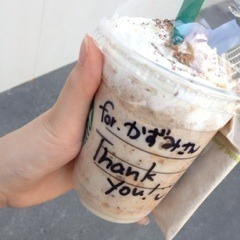

2014/0517Sat（´-`）.｡oO(かずみ ん×285
玲香！お誕生日おめでとう！
れいかのキャプテン好きだ！
そしてみなさん、
沢山のコメントありがとう(T_T)
2000件以上ものメッセージ、
一つ一つ大切に
読ませていただきました。
本当に皆さん、
心優しくていい人...T^T
途中、真夏のコメントもあったよ！
うん、嬉しいね(*´ω`*)
私、昔から人には恵まれてるなって
思ってて、アイドルになっても
それは変わらないよ！！
嬉しいなぁ( ∩ˇωˇ∩)
いっぱい頑張れるよ！！
ありがと(∩*´ω` *∩)
9枚目の製作も
着々と進んでいます！！
と言っても、
まだ見せられない衣装ばかり...
表情で読み取ってちょ！
お楽しみに！
白く光ってるまいやんに
頭をつままれとる...笑
この表情は最近お気に入り。笑
空いてる時間に
プリンシパルの稽古も...
毎日大忙しじゃ！
あとこの間ですね、
懐かしい写真を発見しちゃいました！
高校時代の私どん！
わ、若い...懐かしい...
すっぴんなのにこの肌だった昔！
あぁもう20歳か。
この頃の私にとってはスタバも
珍味だったよ。
それが今ではこんな風に

名前書いて貰えるんだもんな...！
凄いな〜東京って凄いな〜！
アメイジング＼(^o^)／久々にuse
---------
明日は名古屋の全国握手会♪♪
せいたんと一緒のレーンですっ
久しぶりの名古屋楽しみ〜！
それでは、今日はこの辺で♡
あ、最後に
さゆりんのブログ面白い！
夏生まれは夏や太陽が苦手とか
いうやつ！
かずみは太陽とか
なんでも仲良くできそうとか
書いてくれてたけど...
なんかありがとう(っ`∀´*)笑
私はさゆりんの言う通り
お日様とは条約くめるくらい
仲良しよ！
なぜかというと、
日に当たらない日が続くと
私はわかりやすいくらい
気分が暗くなり
喋らなくなるのである！！！
日焼けもあまり気にしない！
ポジティブだから！
私寒がりだから
夏でもパーカー着れるし！！
海行きたい！冬も好きだけどさ！
では！！！
2014/05/17 00:06


コメント(782)
かずみんまじさいこー！！
ほんとかっこよすぎる！！
高校時代かわいすぎ(´>ω<｀)
がんばってね∧( 'Θ' )∧＼(^o^)／
明日の個別行くよっ楽しみ♩
ってか高校時代のかずみんかわいすぎ笑
またコメントします！
写真いっぱいありがとう♪
ほっぺ膨らませた表情すき！
かずみん元気そうでよかった^^！
かずみんもお金持ちだね笑
俺もスタバの新作食べたい(._.)
稽古頑張って〜(^o^)/
ってことでまた〜
アメイジング*\(^o^)/*
この前のブログ、ほんとうに泣きかけた！笑
かずみん応援してる！だいすき！
新しい衣装早く見たいなー笑
ってか新曲まじ楽しみー(*^^*)
写真たくさんありがとう！
さっきも言ったけど、同じ高校生なのにめっちゃレベル高いかわいさだなー♪
レッスンとか大変だとおもうけど、頑張ってください！
握手会のところとかめっちゃ夏期講習開けたんで笑
こんどの横浜の握手会も楽しみにしてます！
☆yoshito☆
スタバすごいね！＼(^o^)／
表情から衣装の想像、難易度高すぎぃ…！
解禁されるまで楽しみにしておくね
皆で寝ころがって撮ってる写真、他の子もあげてたけどかわいい～～！
スタバに名前とか書いてもらえるんだ…！常連さんだから？とにかくすごい～！
9枚目もプリンシパルも楽しみにしてるよ！(プリンシパルチケット落ちまくっててとれてないけど…＞＜)
お稽古も制作も大変だろうけどかずみんらしくポジティブにがんばって！
でわでわ！
バケラッタ！
玲香さんおめでいね！
かずみんも好きだけど玲香さんも大好き！笑
久々に会いに行くうぃる
かずみん無理したらだめだよ！！
体に気をつけてね！
からのー、ポジピースV(^_^)V
高校生のときのかずみんかわいすぎる
もちろん今もかわいいよ!(^^)!
俺は行けないけど今日明日の握手会がんばってね！
今日も頑張ろう！
アイドルかずみん！
ブログのコメントは後でするよ。。
今日は握手会やね。。
楽しもう。。そして、充実した１日になりますように。。
いってらっしゃい。。
今回も行けなくてごめんな。。。。
9枚目の制作進んでるのかー
すごく楽しみだなヾ(＠⌒ー⌒＠)ノ
またガルルみたいな明るい夏曲になることを期待！
というか乃木坂らしさ全開な曲がいいな！
プリンシパルももうすぐでワクワクしてきた*\(^o^)/*
高校生のかずみんアメイジング＼(^o^)／
若いわ！でも今とそんなに変わらないね！
今日もポジティブに行こう！
そんじゃまた( ´ ▽ ` )ﾉ
握手会行けないけどがんばって☆
プリンシバルに9thに大忙しだけど頑張るしかー！
もう9枚目制作始まってるんだ！プリンシパルもあるのに大変だね！頑張るしか！
太陽はあった方が落ち着きます♪夏でもパーカーとか(笑)
握手会頑張ってね！
それじゃまたね！
かずみんー＼(^-^)／
握手楽しんでね(^_^)
今、前回ブログにコメしたとこー(^^)/
そしたら、このブログ更新されてた!!
アメイジング＼(^o^)／
かずみんの周り好い人ばかり♪
それは、かずみんが好い人だから、皆集まってくるんだよ(o^-')b
衣裳見せられないのとか写メいっぱいありがとう♪
まいやんとの写メはカッコいい感じやね!!
稽古の合間の写メとか、かずみんの日常が感じられて嬉しいよ♪
またね(*・ｘ・)ノ~~~♪
どうすればいいの？
アメイジングスパイダーマン見た？(☆。☆)
それちょうだいｗｗ
朝から笑いの神が降臨しました^^v
いい一日になりそうだ！
そろそろ
ホワイトハイの復活ですか？
新曲が楽しみー
大阪は快晴です。全国握手会、個別握手会頑張って下さいね。
名古屋は仕事で良く行きますよ。
自分は9枚目シングルの全国握手会に行きます！
会える日を楽しみにしてます！
京都で初めて行きました。3枚しかないので、あの日は 高山さん、真夏ちゃん、聖羅ちゃんのレーンに行きました。
正直悩んでいます！みんな良い娘だからね。
9枚目シングルは予約済だよ。
一実ちゃんのモバメ楽しみに待ってます。
今日は楽しんで下さい！
いつでも応援してるからね！
早く9thの新衣装みたいなー今から楽しみ！
プリンシパル行くから楽しみにしてるね！*\(^o^)/*
ついに今日だあああああ！！！笑
いろいろあって、ミニライブ行けなくなったけど…
握手会行くからね！
かずみん！
頑張ろうね！(*^_^*)
よし！また来る！
今日も明日も頑張りまっしょい！
では！
かずみん
制作、お稽古お疲れ様！！！！
楽しみにしてるぜ
プリンシパル見に行くよ
今日行きたいわ
がんばってね
9枚目たのしみだな〜！
握手もいっぱい行くね☆彡
高校の頃のかずみんかわいい！
めっちゃかわいい！わかい！
さゆりんブログみたよ♡
条約結べる笑
でもかずみんは確かにそうかも＼(^o^)／
これから忙しいかもしれないけど頑張って！
かずみん夏でもパーカーとか凄すぎ笑
自分は暑がりだから1日中クーラーがないと死んでしまう(;゜0゜)
こんちゃんでした。
ちゃんちゃん♪
てゆか高校時代のかずみん可愛すぎませんか(°_°)しろめ
握手楽しみだわ〜(*´_ゝ｀)
かずみん☆お疲れ様(=ﾟωﾟ)ﾉ〜☆
もう9枚目制作入ったんだね♪( ´▽｀)
プリンシパルのレッスンも大変だね
ちなみ僕は秋が一番好きや〜☆♪
こんにちわん
プリンシパルの稽古でお疲れＳＵＮ。
ソニレコ暇つぶしTV見たよ
マシュマロキャッチ怖がってるかずみん
面白い、それ以上にまっちゅんの反復横跳び
の動きが面白いけど。
今日もポジティブにね。
高校生のかずみんかわいい(o^^o)
今の大人っぽさもプラスされたかずみんも、
もちろんかわいいけどね(^○^)
かずみん、めっちゃかわいい！
ずっと大好きだよ！
今日は仕事だから行けないけど、
明日は行くからね！
コメントする